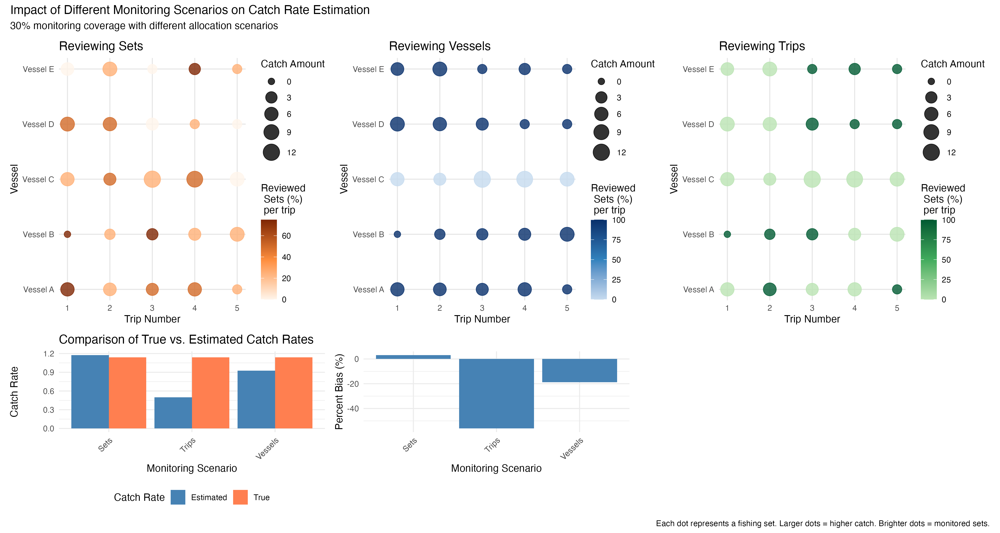
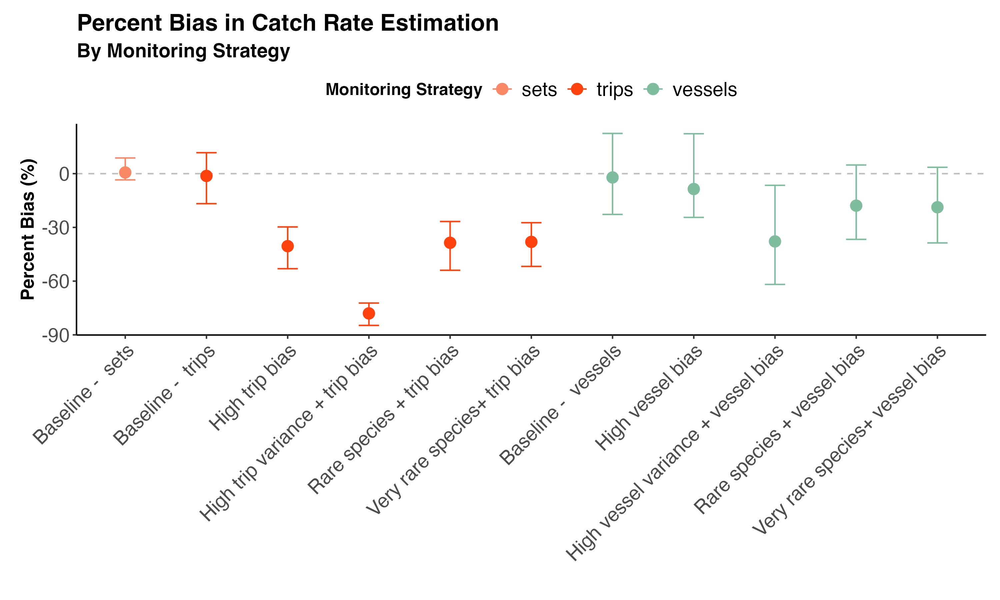

Impact of sampling bias on catch rate estimation
Analysis of catch rate estimation with biased sampling strategies
The problem
The Marine Stewardship Council (MSC) requires fishing fleets to monitor 20-30% of their fishing activities to track statistics like market species catch rate and bycatch. However, they haven’t specified exactly how that 20-30% should be chosen. This creates a potential problem: fishing companies might choose to monitor only their “best” 20-30% of vessels or trips - those with the lowest bycatch rates - making their overall performance look better than it actually is.
This study investigated whether different ways of selecting which fishing activities to monitor would give accurate estimates of true catch rates, or if some methods would be biased and misleading.
Here we provide narratives for how different strategies for monitoring 30% of fishing activities affect the accuracy of estimated catch rates?
Why This Matters: If monitoring is biased toward “cleaner” vessels or trips, regulators and the public might think a fishery is performing better than it really is, potentially allowing harmful fishing practices to continue undetected.
How The Study Was Done
Catch model
We created a computer simulation that modeled a fictional fishing fleet. The fleet was based on a long line tuna fleet (e.g. Brown et al. 2021).
We modelled fishing activities over one year. During the year each of 50 vessels made one or more fishing trips. On each fishing trip they set one or more longlines. We then modelled catch on each longline set.
The number of trips per vessel was randomized to reflect variation that is evident in real long line fisheries. For example, some vessels may only make 2-3 trips in a year whereas others may make more than 10. Likewise, the number of sets per trip was randomized, using a mean of 26 sets per trip.
We included three sources of variation in catch rates per set:
- Set-to-set variation
- Trip-to-trip variation
- Vessel-to-vessel variation
We modelled three types of species that were represented with different average catch rates and different levels of variation across sets:
- A market species that is a target of fishing and is caught commonly, (e.g. yellowfin tuna)
- A by-product species that is caught less consistently than the main market species (e.g. blue shark)
- A rare bycatch species that is caught inconsistently, but is important, such as a TEP species (e.g. green turtles)
The rare bycatch species could also be representative of other rare events, such as trans-shipment.
Monitoring and review model
We considered different scenarios for monitoring the catch and reviewing the monitoring data. We use the term monitor to refer to vessels/trips/sets that had human or electronic observers present. We use the term review to refer to data that was obtained (e.g. not all electronic video is reviewed). We use the term coverage to indicate the percentage of the sets in a year that were monitored. Review was always of whole sets.
Our monitoring scenarios were based on reviewing whole sets, whole trips or whole vessels.
Reviewing whole sets
- 100% monitoring of fishing with random review of 30% of sets. This scenario is reflective of a fleet with 100% EM coverage and 30% review of those sets.
Reviewing whole trips
2a. Review data from 30% of trips. This scenario is reflective of human observers who are allocated at random to monitor whole trips.
2b. Review data from 30% of trips, with a bias towards trips with low catch rates. This scenario could occur when vessel captains shorten their trips when observers are on-board.
2c. As above, but we assumed the fishery had higher variance in catch rates across trips.
Reviewing whole vessels
3a. Review data from 30% of vessels. This scenario is reflective of electronic monitoring systems being installed on 30% of vessels, and then all fishing sets from those vessels being reviewed.
3b. Review data from 30% of vessels, with a bias towards vessels with low catch rates. This scenario could occur if electronic monitoring systems are only installed vessels with low catch rates (such as selecting those with the lowest bycatch for EM).
3c. As above, but we assumed the fishery had higher variance in catch rates across vessels.
Simulations
Our aim was to explore the likelihood that the fictitional monitoring scenarios would obtain unbiased catch rates when applied to each species. We simulated a 1000 replicate years of fishing, to capture the full range of variation described for the catch rates. For each of the 1000 replicates we applied each of the five monitoring scenarios.
Our outcome statistic was the per cent difference between the mean catch rate as monitored and the true mean catch rate. The mean bias was calculated across the 1000 replicates. This statistic represents, on average, how close to monitoring scenario gets to the true catch rate. The ideal situation is to have mean bias of 0%.
We are also interested in the variance in bias statistics across the 1000 replicates. The variance represents the consistency in our monitoring results. For example the ideal outcome would be an average bias is 0% and a very low variance (e.g. 1%). This result would indicate a very good chance of getting an accurate catch rate estimate in any given year of fishing.
We could also find that bias is 0%, but variance is high. Such a result would indicate that for any given year of fishing we are quite likely to obtain an estimated catch rate that is a long way off the true catch rate.
Conceptual Framework
This conceptual figure illustrates how different monitoring approaches work. It shows a fishing fleet where dots represent different vessels and their fishing activities. Orange dots are monitored, grey dots are not monitored. The three sampling strategies are shown, demonstrating how monitoring coverage varies depending on the strategy used.

If monitoring is done randomly we get an estimate of the catch rate that is representative of the true catch rate. If monitoring is done by whole vessels or whole trips, and the selection of those units is biased towards lower catch rates, then the estimated catch rates will also be biased.
Scenarios
We describe scenarios below. This plot shows the percentage bias in estimated catch rates for each scenario and monitoring strategy. Points show mean bias across 1000 simulations and error bars show 95% confidence intervals.

[Note still to update figure once we decide on scenario hierarchy]
[Note: plan is to have one panel for each scenario below. Then need to add back in results for biased vessel/trip allocation for review]
Scenario 1: Randomized review of sets
This is the ideal scenario for 30% distribution of monitoring across sets. We randomly selected 30% of all individual sets for monitoring. This results in no bias on average and high precision.
Scenario 2: Review whole trips
Randomly selected 30% of fishing trips for monitoring. All sets within the selected trips are monitored. This results in no bias on average but lower precision compared to randomized monitoring of sets due to the clustering of data within trips.
Scenario 3: Review whole vessels
In this scenario, 30% of vessels are randomly selected for monitoring, and all trips and sets within those vessels are monitored and reviewed. This results in no bias on average but has the lowest precision among the three randomized strategies due to the clustering of data within vessels.
Practically, this strategy can be achieved by installing electronic monitoring systems on a random subset of vessels.
Box 1: 20% coverage of sets
TODO add this
Box 2: Implications of monitoring scenarios for bias in logbook reporting
Observers could be used to check discrepencies in logbook reporting. Logbooks can under-report catch, especially bycatch or TEP species, compared to observer data (refs). Observers can be used to check if such bias in logbook reporting exists under the assumption that rates of reporting are not influenced by presence of observers.
The same issues for monitoring bias apply to monitoring of logbook reporting. If monitoring is biased towards vessels with accurate logbooks, then the level of fleet-wide bias may be under-estimated. A likely situation is that logbooks are more accurate when fishers know they are being monitored (cite emery paper). In a case where you had partial coverage, this bias would falsely lead an analyst to beleive that logbook data is accurate. A fleet with 100% coverage, but partial review of randomly selected fishing events, incentivises more accurate logbook reporting (Emery et al. 2019).
TODO - add numbers on level of bias - discuss tiered risk scale of log book accuracy.
Technical annex
Parameter calculations
Parameters were calculated from a longline tuna fleet, data given in Brown et al. (2021).
Catch event module
\[ T_{v} = dnegbin(\mu^{trips}, \theta^{trips}) \]
\[ x~v = dnorm(0, \sigma_x\^(-2)) \]
S[v,t] ~ dnegbin(mu_sets, theta_sets) #sample number of sets on the trip z[v,t] ~ dnorm(0, sigma_z^(-2)) # sample trip level random effect
mu[v,t] = beta_0 + z[v,t] + x[v] #calculate expected catch rate y[v,t,s] ~ dnegbin(mu[v,t], theta) # sample catch for this set theta is the dispersion parameterThe model was formulated as follows:
for (v in 1:V){ # for each vessel
for (t in 1:T[v]){ # for each trip this vessel did
S[v,t] ~ dnegbin(mu_sets, theta_sets) #sample number of sets on the trip
z[v,t] ~ dnorm(0, sigma_z^(-2)) # sample trip level random effect
mu[v,t] = beta_0 + z[v,t] + x[v] #calculate expected catch rate
for (s in 1:S[v,t]){ # for each set
y[v,t,s] ~ dnegbin(mu[v,t], theta) # sample catch for this set theta is the dispersion parameter
}
}
}Parameter Explanations: - V: Total number of vessels in the fleet - T[v]: Number of trips taken by vessel v in a year, sampled from a negative binomial distribution - mu_trips: Expected number of trips per vessel per year - theta_trips: Dispersion parameter for the negative binomial distribution of trips - x[v]: Vessel-level random effect for vessel v, sampled from a normal distribution - sigma_x: Standard deviation parameter for the vessel-level random effects - S[v,t]: Number of fishing sets on trip t of vessel v, sampled from a negative binomial distribution - mu_sets: Expected number of sets per trip - theta_sets: Dispersion parameter for the negative binomial distribution of sets - z[v,t]: Trip-level random effect for trip t of vessel v, sampled from a normal distribution - sigma_z: Standard deviation parameter for the trip-level random effects - mu[v,t]: Expected catch rate for trip t of vessel v, combining fixed effect (beta_0) and random effects - beta_0: Baseline expected catch rate (fixed effect) - y[v,t,s]: Observed catch for set s on trip t of vessel v, following a negative binomial distribution - theta: Dispersion parameter for the negative binomial distribution of catch, controlling overdispersion
Sampling Distributions: - Catch per set: Negative binomial - Sets per trip and trips per vessel: Negative binomial
Each sample represents one fishing set (e.g., longline set, purse seine net).
Monitoring Module
The monitoring module determines how monitoring of catches is distributed across the fleet with several parameters:
Parameters: - Total amount of monitoring (percentage of fishing sets monitored) - Distribution of monitoring across fleet components, with option for bias - Coverage within selected units (percentage of trips/sets monitored within selected vessels)
The monitoring module was formulated as follows:
# Strategy 1 sampling across sets
#matrix for storing monitoring status
M_sets = matrix(V,T,S)
phi_sets = logit(p_monitor)
M_sets[v,t,s] ~ dbern(inverse_logit(phi))
# Strategy 2 sampling random vessels
M_vessels = matrix(V,T,S)
phi_vessels = array(dim=c(V,T,S))
for (v in 1:V) {
phi_vessels[v,,] = logit(p_monitor) + bias_v * x[v]
}
M_vessels[v,t,s] ~ dbern(inverse_logit(phi_vessels[v,t,s]))
# Strategy 3: Random selection of trips within vessels
M_trips = matrix(V,T,S)
phi_trips = array(dim=c(V,T,S))
for (v in 1:V) {
for (t in 1:T[v]) {
phi_trips[v,t,] = logit(p_monitor) + bias_factor * z[v,t]
}
}
M_trips[v,t,s] ~ dbern(inverse_logit(phi_trips[v,t,s]))
Parameter Explanations: - M_sets, M_vessels, M_trips: Matrices indicating monitoring status for each set under different strategies (1 = monitored, 0 = not monitored) - p_monitor: Base proportion of sets to be monitored (e.g., 0.3 for 30% coverage) - phi_sets, phi_vessels, phi_trips: Logit-transformed probabilities of monitoring for each strategy - bias_v: Bias factor for vessel-based selection (when > 0, vessels with lower catch rates are more likely selected) - bias_factor: Bias factor for trip-based selection (when > 0, trips with lower catch rates are more likely selected) - x[v]: Vessel-level random effect used in the bias mechanism for vessel selection - z[v,t]: Trip-level random effect used in the bias mechanism for trip selection
Bias Mechanism: - When bias_factor > 0, vessels/trips with lower catch rates (negative random effects) are more likely to be selected - Higher bias_factor values lead to stronger selection bias - The bias operates through the vessel random effect (x[v]) or trip random effect (z[v,t]) depending on strategy - logit_inverse(x) = 1/(1+exp(-x)) transforms logit values back to probabilities
Distribution Strategies: - Random across sets: Each set has equal probability of being monitored - Random across vessels: Selected vessels have all their sets monitored - Random across trips within vessels: Selected trips have all their sets monitored
Catch statistic estimation
For a given monitoring strategy M and catch data y, the estimated catch rate per set can be calculated as follows:
# Apply monitoring to estimate catch rate
estimated_catch_rate = sum(y[v,t,s] * M[v,t,s]) / sum(M[v,t,s])
true_catch_rate = sum(y[v,t,s])/prod(dim(y))
bias = estimated_total_catch - true_total_catch
bias_percent = bias / true_catch_rate * 100